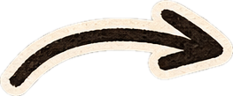
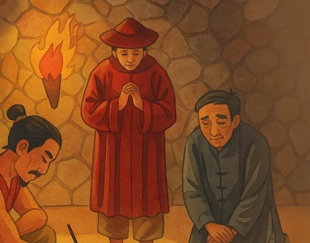
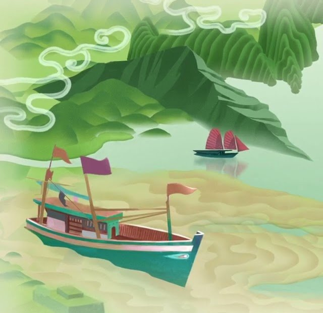
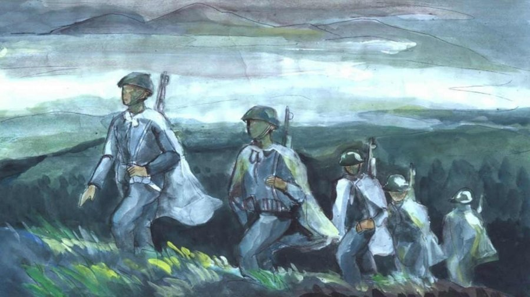
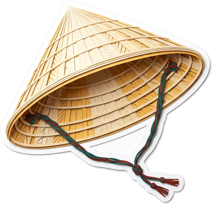
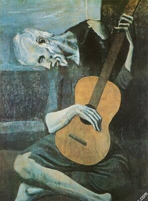

Kính gửi thầy Hoàng,
—
Kính tặng thầy Nguyễn Huy Hoàng
Ai đã đặt tên cho

Một năm học Văn, mười mấy trang đời. Cuốn scrapbook nhỏ của lớp 12V1 — Dòng chảy 9+, dán đầy ảnh, chữ và những điều chúng con chưa kịp nói.

Lướt xuống để mở từng trang



 9+
9+

Chương I · mượn “Chữ người tử tù” — Nguyễn Tuân

Ánh đuốc đỏ rực, tấm lụa trắng tinh, từng nét chữ dồn hết tâm huyết. Lớp của thầy không có ngục tù, nhưng có những đêm ôn thi như thế — và thầy đã cho chúng con ba con chữ. Rê chuột (hoặc chạm) vào tấm lụa để lật.


Chương II · mượn “Hai đứa trẻ” — Thạch Lam
Như chị em Liên chờ chuyến tàu đêm, chúng con chờ một điều sáng hơn: điểm 9+ mùa hè năm ấy. Giữa những tối dài, lớp Văn của thầy là ngọn đèn không tắt.


Chương III · mượn “Sóng” — Xuân Quỳnh



Chương IV · mượn “Tây Tiến” — Quang Dũng
“Sương lấp đoàn quân mỏi” — còn chúng con thì chẳng mỏi chút nào.



Chương V · mượn “Đàn ghi ta của Lorca” — Thanh Thảo
li-la li-la li-la… thành 9+ 9+ 9+



{{l.tag}}
{{l.text}}


Chương VI · mượn hình bia Tiến sĩ — Văn Miếu
Vinh danh kỳ thi tốt nghiệp THPT 2025 — Khoá 2K7
ĐIỂM VĂN
{{h.score}}
{{h.name}}
Chương VII · những phong thư
Rê chuột để hé thư, bấm để đọc trọn


Kính gửi thầy Hoàng,
—
Kết · mượn “Tràng giang” — Huy Cận

Chúc thầy luôn mạnh khỏe, giữ mãi ngọn lửa với văn chương, và có thêm thật nhiều lớp “Dòng chảy” chảy mãi về phía tử tế.
Tập thể lớp 12V1
Phụ lục — những trang thầy không ngờ chúng con lưu lại